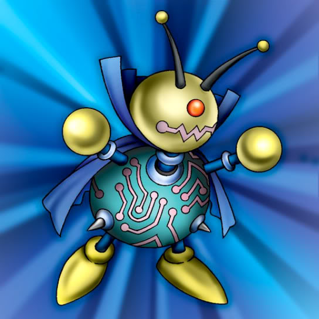

Oscillo Hero

STATS
ATK: 1250
DEF: 700DECK COST
Deck Cost per Card: 20Fusion List (16 Possible Fusions)
- Oscillo Hero + Air Marmot of Nefariousness = Tiger Axe
- Oscillo Hero + Ancient Tree of Enlightenment = Bean Soldier
- Oscillo Hero + Baby Dragon = D. Human
- Oscillo Hero + Blackland Fire Dragon = Sword Arm of Dragon
- Oscillo Hero + Blue-Eyed Silver Zombie = Armored Zombie
- Oscillo Hero + Brave Scizzar = Cyber Soldier
- Oscillo Hero + Disk Magician = Cyber Soldier
- Oscillo Hero + Fiend's Hand = Armored Zombie
- Oscillo Hero + Fire Eye = Flame Swordsman
- Oscillo Hero + Griggle = Bean Soldier
- Oscillo Hero + Koumori Dragon = Sword Arm of Dragon
- Oscillo Hero + Mech Mole Zombie = Armored Zombie
- Oscillo Hero + Milus Radiant = Tiger Axe
- Oscillo Hero + Phantom Ghost = Armored Zombie
- Oscillo Hero + The Thing That Hides in the Mud = Minomushi Warrior
- Oscillo Hero + Wings of Wicked Flame = Flame Swordsman